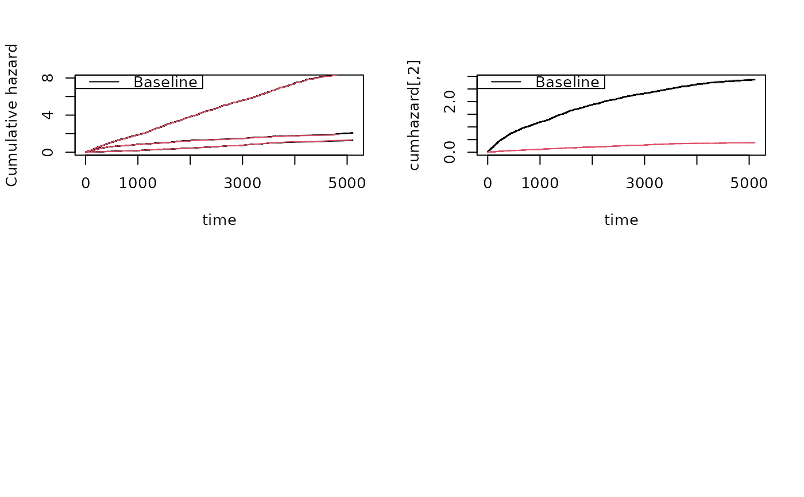
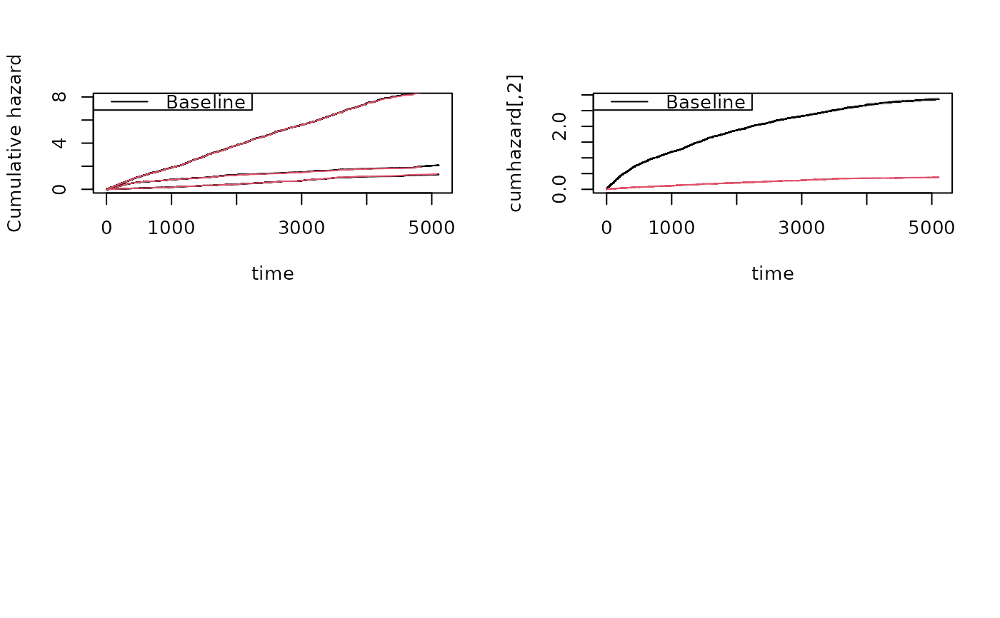

Simulation of recurrent events data based on cumulative hazards with two types of recurrent events
Source:R/recurrent.marginal.R
simRecurrentII.RdSimulation of recurrent events data based on cumulative hazards
Usage
simRecurrentII(
n,
cumhaz,
cumhaz2,
death.cumhaz = NULL,
r1 = NULL,
r2 = NULL,
rd = NULL,
rc = NULL,
dependence = 0,
var.z = 1,
cor.mat = NULL,
cens = NULL,
gap.time = FALSE,
max.recurrent = 100,
...
)Arguments
- n
number of id's
- cumhaz
cumulative hazard of recurrent events
- cumhaz2
cumulative hazard of recurrent events of type 2
- death.cumhaz
cumulative hazard of death
- r1
potential relative risk adjustment of rate
- r2
potential relative risk adjustment of rate
- rd
potential relative risk adjustment of rate
- rc
potential relative risk adjustment of rate
- dependence
0:independence; 1:all share same random effect with variance var.z; 2:random effect exp(normal) with correlation structure from cor.mat; 3:additive gamma distributed random effects, z1= (z11+ z12)/2 such that mean is 1 , z2= (z11^cor.mat(1,2)+ z13)/2, z3= (z12^(cor.mat(2,3)+z13^cor.mat(1,3))/2, with z11 z12 z13 are gamma with mean and variance 1 , first random effect is z1 and for N1 second random effect is z2 and for N2 third random effect is for death
- var.z
variance of random effects
- cor.mat
correlation matrix for var.z variance of random effects
- cens
rate of censoring exponential distribution
- gap.time
if true simulates gap-times with specified cumulative hazard
- max.recurrent
limits number recurrent events to 100
- ...
Additional arguments to simRecurrentList
Details
Must give cumulative hazard of death and possibly two recurrent events. Their dependence can be specified via random effects but the two recurrent events need to share the random effect, and can also be specified via zzr. The terminal event may share this random effect (dependence=1) or not (dependence=4) and can be specified via zzr.
Examples
########################################
## getting some rates to mimick
########################################
library(mets)
data(CPH_HPN_CRBSI)
dr <- CPH_HPN_CRBSI$terminal
base1 <- CPH_HPN_CRBSI$crbsi
base4 <- CPH_HPN_CRBSI$mechanical
######################################################################
### simulating simple model that mimicks data
######################################################################
rr <- simRecurrent(5,base1)
dlist(rr,.~id,n=0)
#> id: 1
#> entry time status dtime fdeath death start stop
#> 1 0.00000 46.48577 1 5110 0 0 0.00000 46.48577
#> 6 46.48577 354.25536 1 5110 0 0 46.48577 354.25536
#> 11 354.25536 784.54874 1 5110 0 0 354.25536 784.54874
#> 16 784.54874 1532.83800 1 5110 0 0 784.54874 1532.83800
#> 21 1532.83800 2165.23317 1 5110 0 0 1532.83800 2165.23317
#> 26 2165.23317 3076.99011 1 5110 0 0 2165.23317 3076.99011
#> 31 3076.99011 3079.98994 1 5110 0 0 3076.99011 3079.98994
#> 35 3079.98994 3620.79709 1 5110 0 0 3079.98994 3620.79709
#> 37 3620.79709 3643.20854 1 5110 0 0 3620.79709 3643.20854
#> 39 3643.20854 3704.27821 1 5110 0 0 3643.20854 3704.27821
#> 41 3704.27821 3877.28789 1 5110 0 0 3704.27821 3877.28789
#> 43 3877.28789 5110.00000 0 5110 0 0 3877.28789 5110.00000
#> ------------------------------------------------------------
#> id: 2
#> entry time status dtime fdeath death start stop
#> 2 0.0000 836.2402 1 5110 0 0 0.0000 836.2402
#> 7 836.2402 1582.7756 1 5110 0 0 836.2402 1582.7756
#> 12 1582.7756 1909.3792 1 5110 0 0 1582.7756 1909.3792
#> 17 1909.3792 2788.0148 1 5110 0 0 1909.3792 2788.0148
#> 22 2788.0148 4131.8937 1 5110 0 0 2788.0148 4131.8937
#> 27 4131.8937 4542.2007 1 5110 0 0 4131.8937 4542.2007
#> 32 4542.2007 5110.0000 0 5110 0 0 4542.2007 5110.0000
#> ------------------------------------------------------------
#> id: 3
#> entry time status dtime fdeath death start stop
#> 3 0.0000 477.0110 1 5110 0 0 0.0000 477.0110
#> 8 477.0110 684.0066 1 5110 0 0 477.0110 684.0066
#> 13 684.0066 752.7554 1 5110 0 0 684.0066 752.7554
#> 18 752.7554 786.7790 1 5110 0 0 752.7554 786.7790
#> 23 786.7790 1523.6981 1 5110 0 0 786.7790 1523.6981
#> 28 1523.6981 1697.5033 1 5110 0 0 1523.6981 1697.5033
#> 33 1697.5033 2121.4121 1 5110 0 0 1697.5033 2121.4121
#> 36 2121.4121 2211.0749 1 5110 0 0 2121.4121 2211.0749
#> 38 2211.0749 2248.7271 1 5110 0 0 2211.0749 2248.7271
#> 40 2248.7271 3559.0995 1 5110 0 0 2248.7271 3559.0995
#> 42 3559.0995 3823.9527 1 5110 0 0 3559.0995 3823.9527
#> 44 3823.9527 4697.2929 1 5110 0 0 3823.9527 4697.2929
#> 45 4697.2929 4697.6391 1 5110 0 0 4697.2929 4697.6391
#> 46 4697.6391 5031.7334 1 5110 0 0 4697.6391 5031.7334
#> 47 5031.7334 5110.0000 0 5110 0 0 5031.7334 5110.0000
#> ------------------------------------------------------------
#> id: 4
#> entry time status dtime fdeath death start stop
#> 4 0.000 1570.693 1 5110 0 0 0.000 1570.693
#> 9 1570.693 3057.897 1 5110 0 0 1570.693 3057.897
#> 14 3057.897 3389.234 1 5110 0 0 3057.897 3389.234
#> 19 3389.234 3913.541 1 5110 0 0 3389.234 3913.541
#> 24 3913.541 3976.522 1 5110 0 0 3913.541 3976.522
#> 29 3976.522 5110.000 0 5110 0 0 3976.522 5110.000
#> ------------------------------------------------------------
#> id: 5
#> entry time status dtime fdeath death start stop
#> 5 0.000 1253.563 1 5110 0 0 0.000 1253.563
#> 10 1253.563 1947.437 1 5110 0 0 1253.563 1947.437
#> 15 1947.437 2075.897 1 5110 0 0 1947.437 2075.897
#> 20 2075.897 2211.924 1 5110 0 0 2075.897 2211.924
#> 25 2211.924 3991.204 1 5110 0 0 2211.924 3991.204
#> 30 3991.204 5084.684 1 5110 0 0 3991.204 5084.684
#> 34 5084.684 5110.000 0 5110 0 0 5084.684 5110.000
rr <- simRecurrent(5,base1,death.cumhaz=dr)
dlist(rr,.~id,n=0)
#> id: 1
#> entry time status dtime fdeath death start stop
#> 1 0.0000 350.6289 1 2996.717 1 0 0.0000 350.6289
#> 6 350.6289 362.1943 1 2996.717 1 0 350.6289 362.1943
#> 10 362.1943 884.5432 1 2996.717 1 0 362.1943 884.5432
#> 12 884.5432 1546.1629 1 2996.717 1 0 884.5432 1546.1629
#> 14 1546.1629 1701.7343 1 2996.717 1 0 1546.1629 1701.7343
#> 16 1701.7343 2996.7166 0 2996.717 1 1 1701.7343 2996.7166
#> ------------------------------------------------------------
#> id: 2
#> entry time status dtime fdeath death start stop
#> 2 0 209.9771 0 209.9771 1 1 0 209.9771
#> ------------------------------------------------------------
#> id: 3
#> entry time status dtime fdeath death start stop
#> 3 0.0000 509.7645 1 4193.438 1 0 0.0000 509.7645
#> 7 509.7645 4193.4377 0 4193.438 1 1 509.7645 4193.4377
#> ------------------------------------------------------------
#> id: 4
#> entry time status dtime fdeath death start stop
#> 4 0.0000 298.0493 1 2335.534 1 0 0.0000 298.0493
#> 8 298.0493 482.9285 1 2335.534 1 0 298.0493 482.9285
#> 11 482.9285 490.5588 1 2335.534 1 0 482.9285 490.5588
#> 13 490.5588 630.2717 1 2335.534 1 0 490.5588 630.2717
#> 15 630.2717 750.7360 1 2335.534 1 0 630.2717 750.7360
#> 17 750.7360 768.4209 1 2335.534 1 0 750.7360 768.4209
#> 18 768.4209 1510.5186 1 2335.534 1 0 768.4209 1510.5186
#> 19 1510.5186 1936.9710 1 2335.534 1 0 1510.5186 1936.9710
#> 20 1936.9710 2263.3131 1 2335.534 1 0 1936.9710 2263.3131
#> 21 2263.3131 2335.5340 0 2335.534 1 1 2263.3131 2335.5340
#> ------------------------------------------------------------
#> id: 5
#> entry time status dtime fdeath death start stop
#> 5 0.0000 358.8214 1 4797.555 1 0 0.0000 358.8214
#> 9 358.8214 4797.5555 0 4797.555 1 1 358.8214 4797.5555
rr <- simRecurrent(100,base1,death.cumhaz=dr)
par(mfrow=c(1,3))
showfitsim(causes=1,rr,dr,base1,base1)
######################################################################
### simulating simple model
### random effect for all causes (Z shared for death and recurrent)
######################################################################
rr <- simRecurrent(100,base1,death.cumhaz=dr,dependence=1,var.z=0.4)
dtable(rr,~death+status)
#>
#> status 0 1
#> death
#> 0 26 221
#> 1 74 0
######################################################################
### now with two event types and second type has same rate as death rate
######################################################################
set.seed(100)
rr <- simRecurrentII(100,base1,base4,death.cumhaz=dr)
dtable(rr,~death+status)
#>
#> status 0 1 2
#> death
#> 0 10 295 39
#> 1 90 0 0
par(mfrow=c(2,2))
 showfitsim(causes=2,rr,dr,base1,base4)
######################################################################
### now with three event types and two causes of death
######################################################################
set.seed(100)
cumhaz <- list(base1,base1,base4)
drl <- list(dr,base4)
rr <- simRecurrentList(100,cumhaz,death.cumhaz=drl,dependence=0)
dtable(rr,~death+status)
#>
#> status 0 1 2 3
#> death
#> 0 4 232 268 33
#> 1 70 0 0 0
#> 2 26 0 0 0
showfitsimList(rr,cumhaz,drl)

showfitsim(causes=2,rr,dr,base1,base4)
######################################################################
### now with three event types and two causes of death
######################################################################
set.seed(100)
cumhaz <- list(base1,base1,base4)
drl <- list(dr,base4)
rr <- simRecurrentList(100,cumhaz,death.cumhaz=drl,dependence=0)
dtable(rr,~death+status)
#>
#> status 0 1 2 3
#> death
#> 0 4 232 268 33
#> 1 70 0 0 0
#> 2 26 0 0 0
showfitsimList(rr,cumhaz,drl)
